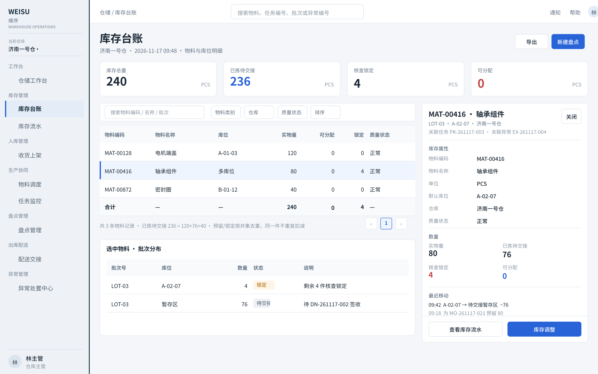

SELECTED WORKS · UX & PRODUCT DESIGN
SCROLL TO EXPLORE↓PORTFOLIO / OPEN COLLECTION
SELECTED WORKS
查看全部作品 ↗精选作品06


按招聘方向读作品
三条阅读路径03
四个都是概念项目，按岗位关注点排列，不重复堆内容。
DESIGN APPROACH不只完成界面，
不只完成界面，
也解释设计为什么成立。
每个项目都从具体问题开始，梳理使用情境、信息关系和关键决策，再通过界面与原型表达方案。研究、测试和真实落地状态会单独标明，不把推测写成结论。
查看设计方法 ↗01理解问题情境 / 用户 / 证据
02组织体验旅程 / 信息架构 / 流程
03设计决策交互 / 状态 / 反馈
04验证与复盘原型 / 测试 / 局限
P.